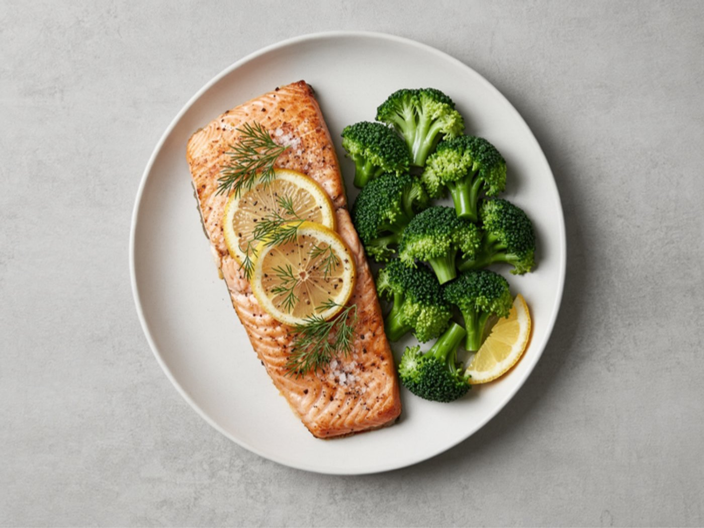

Вечері · № 041
Лосось, запечений з лимоном
25 хвчас
2порції
7інгредієнтів
КБЖВ · ПП-версіяна порцію
397ккал
35 гбілки
23 гжири
13 гвуглеводи
Класична версія: 444 ккал · Ж 30 г → тут на 11% менше калорій
На 100 г: 122 ккал · Б 11 · Ж 7 · В 4. Розраховано за інгредієнтами рецепта, значення приблизні.
Інгредієнти7
Приготування4 кроки
- Розігрійте духовку до 200 °C.
- Викладіть рибу й броколі на пергамент, змастіть олією з часником, посоліть і поперчіть.
- Покладіть зверху скибки лимона й зелень.
- Запікайте 12–15 хв. Жир лосося корисний, тому додаткова олія майже не потрібна.